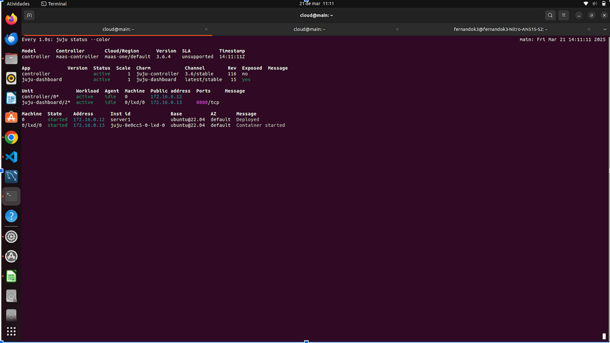
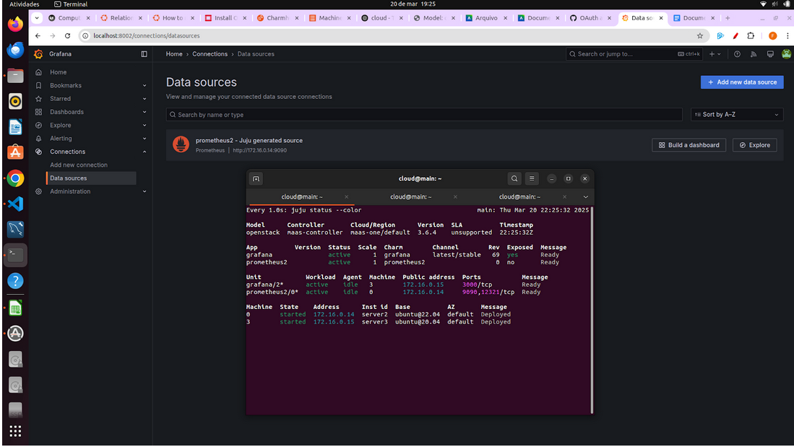
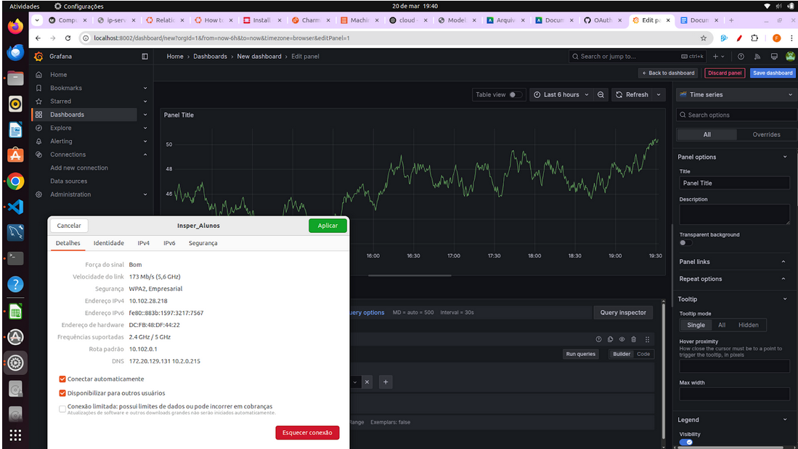
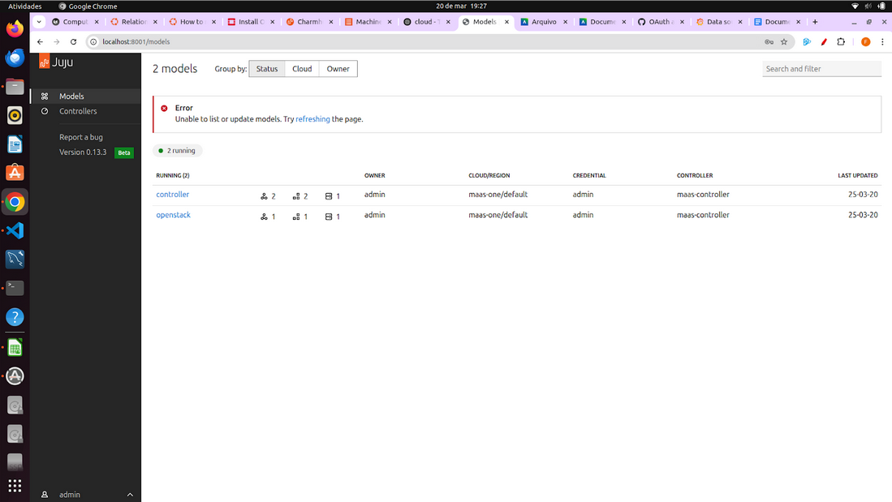

Relatorio
Objetivo
Este Roteiro tem o objetivo a documentação e implementação de conceitos sobre uma plataforma de gerenciamento de software e a comunicação entre aplicativos e serviços
Tarefa 1
1. De um print da tela do Dashboard do MAAS com as Maquinas e seus respectivos IPs.

2. De um print de tela do comando "juju status" depois que o Grafana estiver "active".
Status do Controller:

Status do openstack: 
3. De um print da tela do Dashboard do Grafana com o Prometheus aparecendo como source.
Acessado a partir de um tunelamento. Isso foi feito apos a integração com o grafana: 
4. Prove (print) que você está conseguindo acessar o Dashboard a partir da rede do Insper.

5. De um print na tela que mostra as aplicações sendo gerenciadas pelo JUJU
Dashboard do JUJU - models: 
Dashboard do JUJU - controlers:

Extra:
Foi criado uma regra de NAT para o dashboard do JUJU - facilitar o acesso e evitar tunelamento:

Discussões:
A instalação do Juju e sua integração com o MaaS foram relativamente tranquilas após entender a lógica de providers e credenciais. O uso do juju bootstrap para configurar o controlador exigiu atenção às tags e série correta, mas funcionou bem após a preparação. O deploy dos charms do Grafana e Prometheus foi direto, mas a integração entre eles demandou leitura cuidadosa da documentação. O acesso ao Dashboard do Grafana e a validação do Prometheus como source exigiram configuração de túnel SSH ou NAT, o que foi um ponto mais técnico. No geral, o Juju facilitou bastante o gerenciamento dos serviços distribuídos, embora o entendimento inicial da ferramenta tenha exigido um pouco mais de estudo.
Conclusão:
O uso do Juju mostrou-se uma poderosa ferramenta de orquestração de serviços, especialmente por sua integração direta com o MaaS, permitindo deploys consistentes e escaláveis em infraestrutura bare-metal. Comparado ao Ansible, Juju vai além, assumindo também o provisionamento das máquinas. A abordagem baseada em charms simplificou o deploy do Grafana e Prometheus, e o dashboard do Juju ofereceu uma visão clara das aplicações em execução